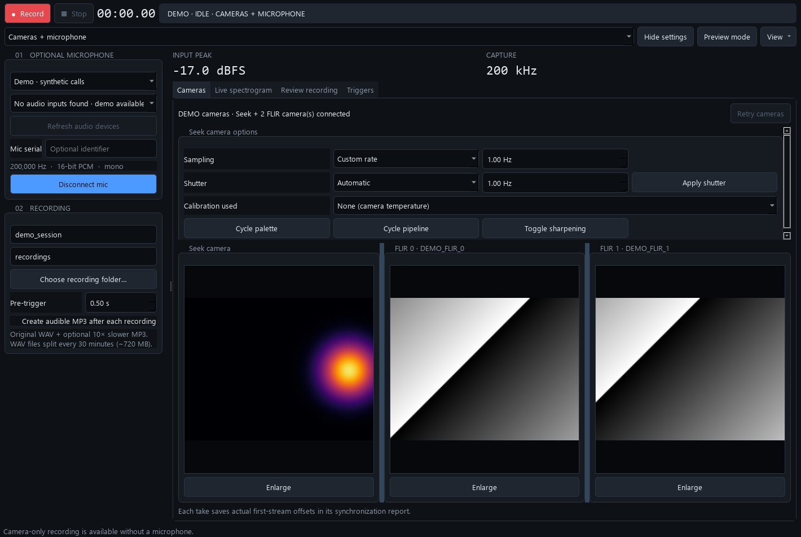

This is the source distribution. Install Python 3.12 x64, then run these commands from this folder:
Setup_Windows.cmd --camera Demo_Sync_Recorder.cmd
The demo simulates Seek, two FLIRs, and microphone audio. It needs no camera SDKs. Click Record and Stop manually. Demo sessions are labelled DEMO.

Install your licensed Seek SDK and Windows driver, plus the matching Teledyne Spinnaker SDK / vendor
PySpin wheel for Python 3.12 x64. Set SYNC_SEEK_DLL to your installed Seek DLL and run
Start_Sync_Recorder.cmd. The unrelated PyPI pyspin package is not the FLIR SDK.
Cameras only is the default. To include audio, select Cameras + microphone, select an input, and click Connect & monitor. Independent FLIR MP4 and microphone MP3 modes are also available.
Choose storage outside the source checkout. Combined takes save segmented MP4 previews, thermal CSV, timing logs, and a take report. Microphone mode adds original PCM WAV. Camera faults trigger recovery attempts and gap reporting. Review the final report before analysis.
Host receipt timestamps and audio estimates do not establish physical simultaneity. Validate physical timing on the actual devices.
A separately built executable bundle includes Python and native libraries. Keep the complete bundle
together and run Setup_New_PC.cmd inside it. Source users follow the installation above.
The repository does not include camera drivers, SDK binaries, or executables.
Read setup, synchronization, local builds, and validation.